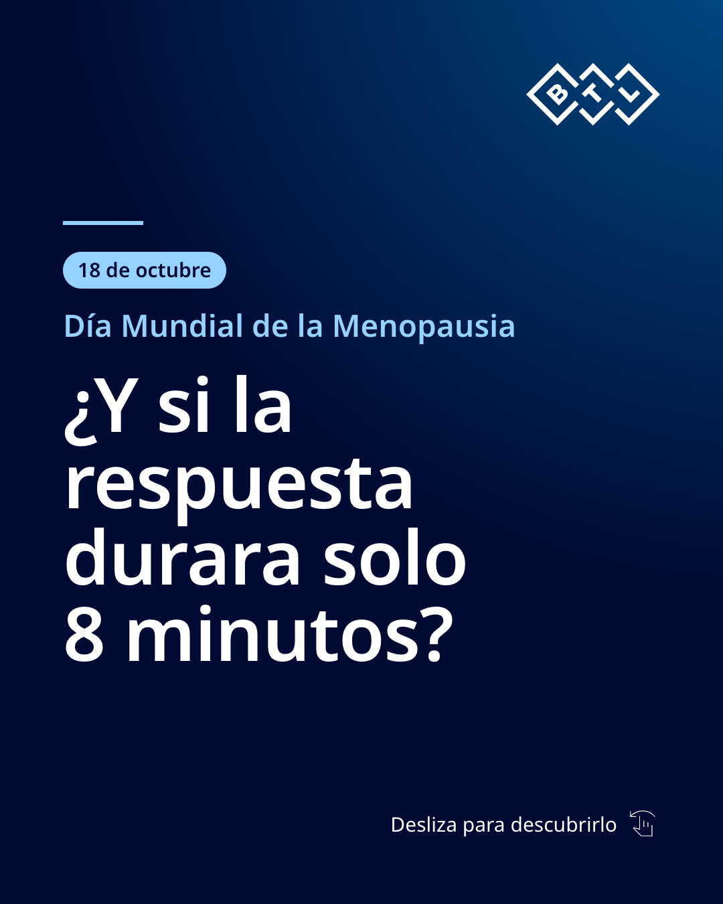
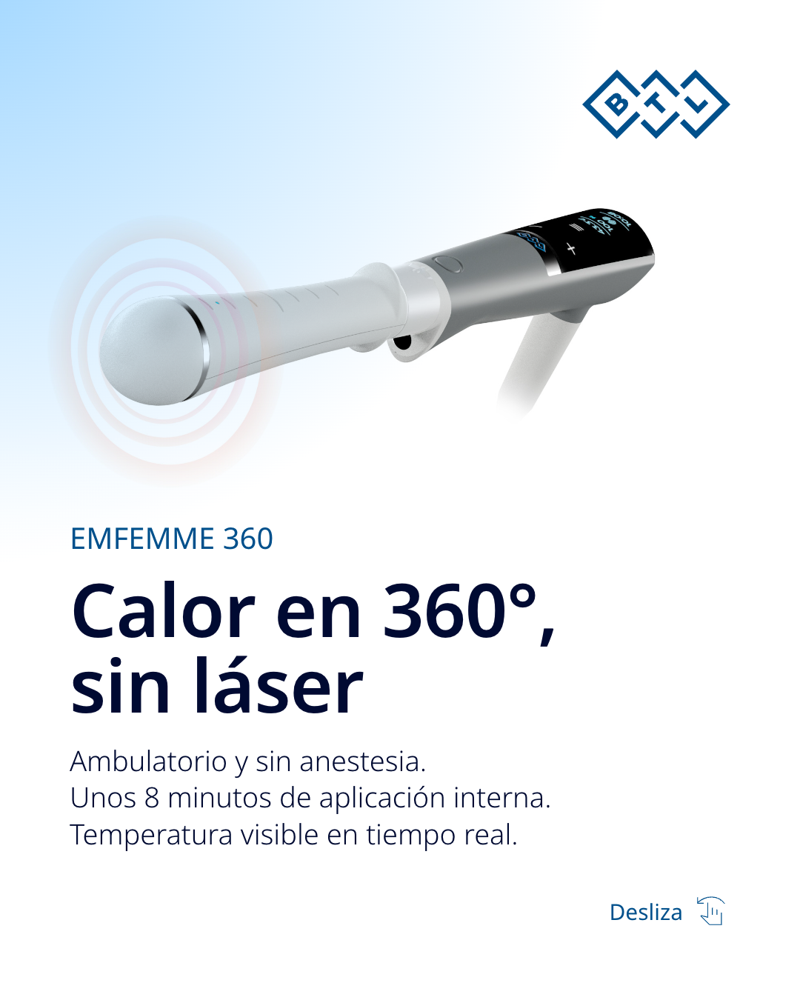
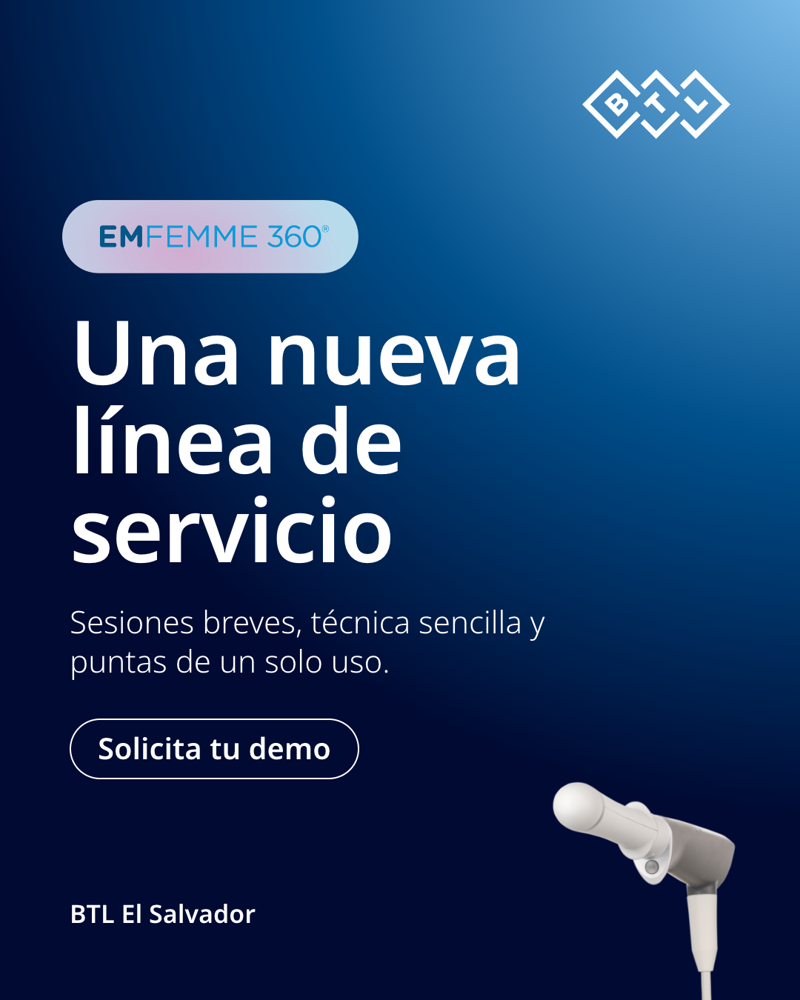

Este 18 de octubre, Día Mundial de la Menopausia, ¿qué ofrece tu clínica cuando una paciente por fin habla de su salud íntima? EMFEMME 360 es radiofrecuencia no invasiva que calienta en 360° las áreas vaginales internas y externas, sin láser y sin anestesia. La aplicación interna dura unos 8 minutos, con la temperatura visible en tiempo real. Una nueva línea de servicio para tu consulta. Escríbenos "DEMO" por mensaje directo y agenda tu demo con BTL El Salvador. #DíaMundialDeLaMenopausia #SaludÍntima #EMFEMME360 #MedicinaEstética #BTLElSalvador